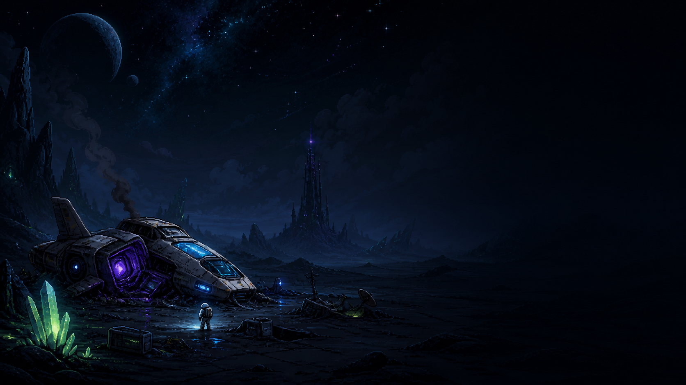

Your browser does not support the canvas tag.
Your browser does not support JavaScript.
Game Lab 4
A dark 2D platformer web build

Survive the crypt, dodge deadly traps, and escape the knight pursuit.
Controls:
A
/
D
move,
Space
jump,
X
shoot.
Tip: use fullscreen for the best experience.